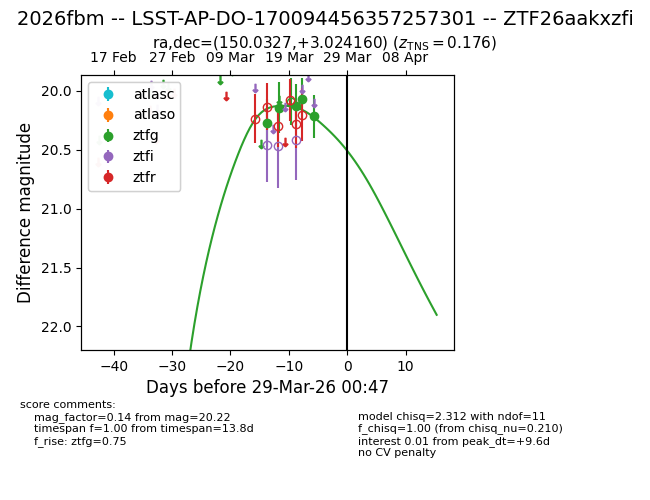
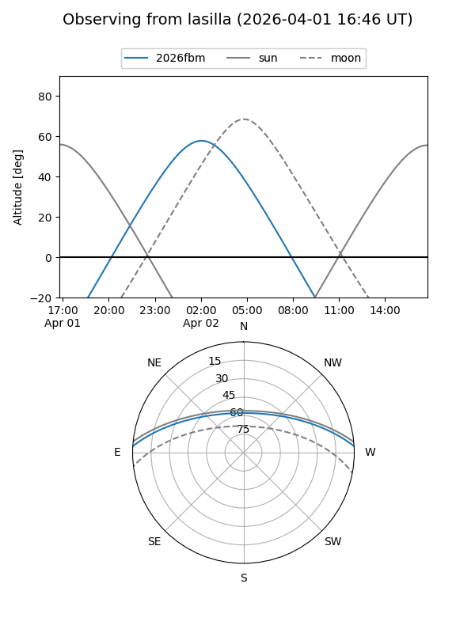
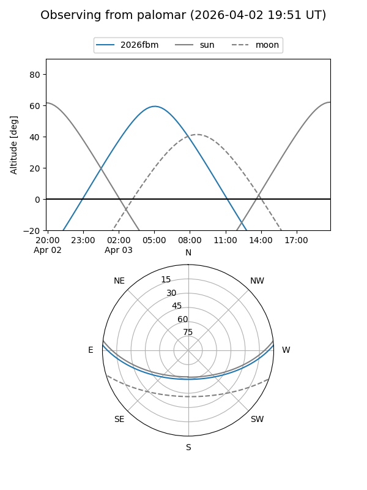
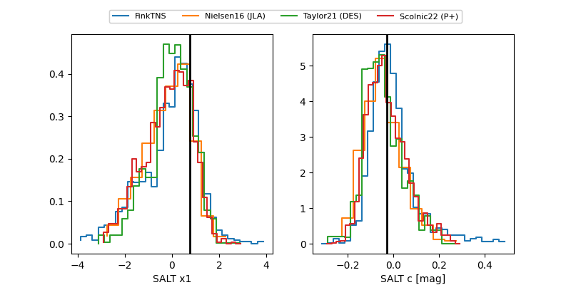

2026fbm
Target 2026fbm at 2026-03-29 00:50
Aliases and brokers:
FINK: link
Lasair: link
ALeRCE: link
TNS: link
YSE: link
alt names
ZTF26aakxzfi (ztf,fink_ztf)
2026fbm (tns,yse)
LSST-AP-DO-170094456357257301 (lsst)
Coordinates:
equatorial (ra, dec) = 150.0327,+3.02416
equatorial (HMS+DMS) = 10:00:07.84,+03:01:26.98
galactic (l, b) = (235.8500,+42.52214)
Flags:
confirmed ia
Photometry:
last ztfg=20.22
5 ztfg detections
Lightcurve

Visibility


Additional plots
